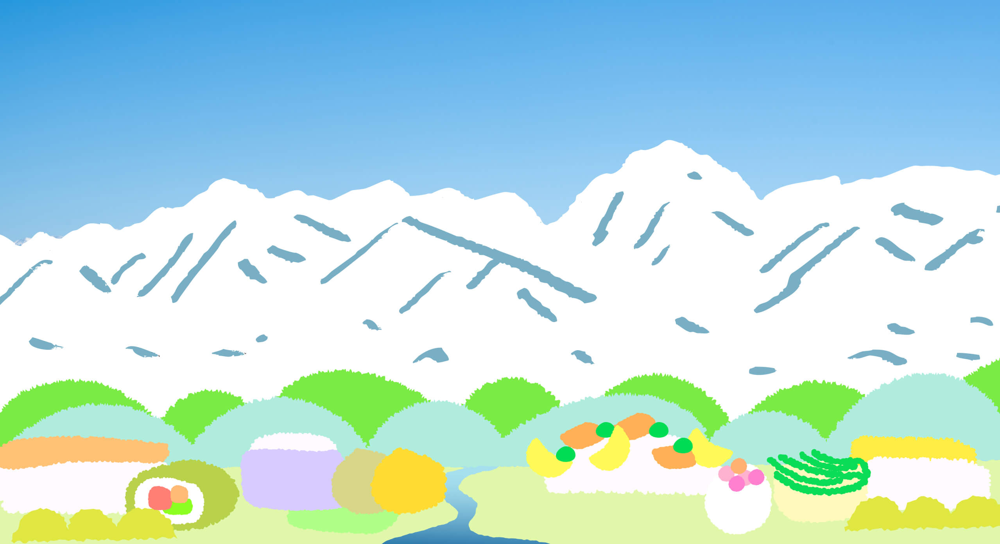
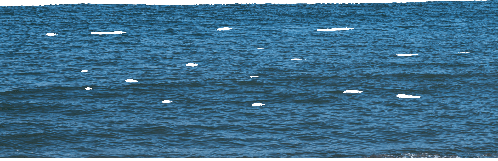
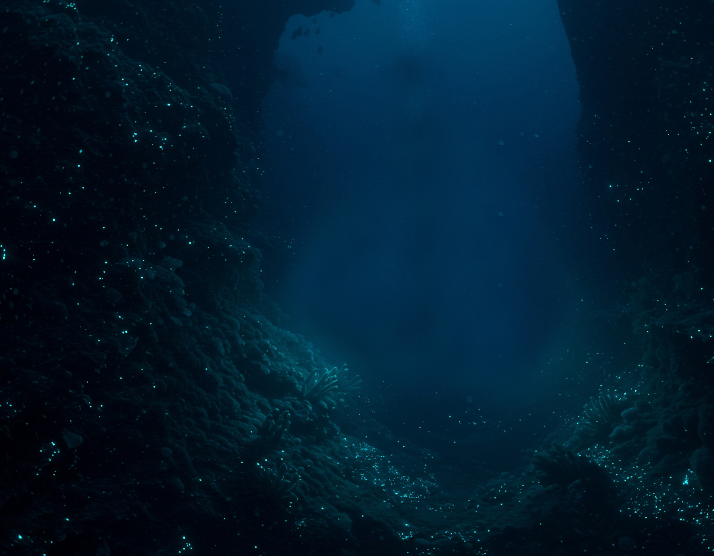

Sushi from the Sea & Sushi from the Mountains

富山ガストロノミー ツーリズム
Text text text text text text text text text text text text text text text text text text text text text text text text text text text text text text text text text text text text text text text text text text text text text text text text
WHY Toyama Sushi is Diverse
なぜ多彩なのか
TRUE Diversity of Toyama Sushi
本当に多彩なのか
SO WHAT ?
それで何なの？
ABOUT Sushi
寿司の知識
From the depth of the sea to the peaks of the Alps – The diversity born from Toyama’s 4000m elevation range.